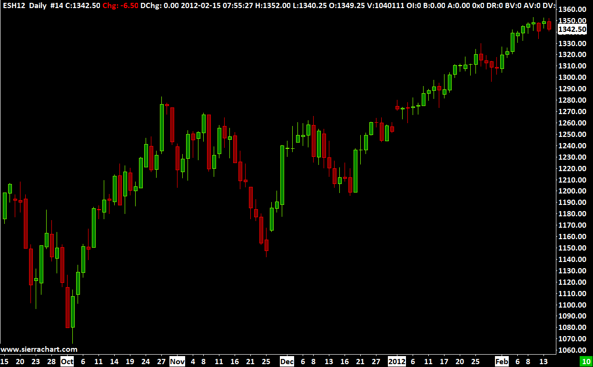

Home >> (Table of Contents) Supported Data and Trading Services >> Sierra Chart Historical Data Service
Sierra Chart Historical Data Service
{kind=link}
- Introduction
- What is Included
- Integration with Trading Services
- Setup Instructions
- Included Markets
- End of Day Update Times
- Sierra Chart Historical Data Service Does Not Provide Real-Time Data
- Open Interest Data
- Futures Month Codes
- Charting Total Volume and Open Interest
Introduction
The Sierra Chart Historical Data Service provides Historical Daily Data (for charts with a bar period of 1 Day and greater) and Historical Intraday data for Sierra Chart.
The Sierra Chart Historical Data Service is a historical data only service. It does not provide streaming real-time or streaming delayed data. When the charts are updated, they will be up-to-date within 10 to 15 minutes of the current prices.
Historical tick by tick Intraday data is also provided for most of the futures exchanges and for US stocks (NYSE, AMEX, NASDAQ).
The Sierra Chart Historical Data Service is included with the Standard and Advanced Sierra Chart Service Packages.
The Sierra Chart Historical Data Service can be used on its own for Historical Daily and Intraday charts. Or, for Historical Daily chart data to use with a Trading service you are using Sierra Chart with, which does not provide Historical Daily chart data.
This service is fast and reliable.
If you require real-time data it is recommended to use one of the Real-Time Exchange Data Feeds Available from Sierra Chart.
For Forex and CFD historical and real-time data, use the Sierra Chart Realtime and Historical Forex/CFD Data Service.
The historical Intraday data from this service can be replayed.
Daily Data Download Limit
With the Sierra Chart Historical Data Service there is a limitation on the number of Historical Daily data requests per month. This is because the service provider we use charges per query.
The limitation for the number of Historical Daily data requests is 30,000 per month. This applies primarily to Historical Daily data requests only and not historical Intraday data requests.
If you exceed this limit, then the reason for this is given in the Window >> Message Log.
Max downloads per month exceeded. Downloads = ###. Monthly Limit: #####.
Although historical Intraday data requests for some less common markets are also included in these counts. For Continuous Futures Contract charts, there are multiple data requests made when the initial data is downloaded.
To increase the number of Historical Daily data downloads per month, go to the Services Activation page and the Additional Historical Daily Data Downloads section.
To see the number of queries you have for the month, go to Additional Historical Daily Data Downloads.
What is Included
- Streaming Real-Time Data: No.
- Historical Intraday Data: Yes.
Tick by tick data for futures contracts on the CME/NYMEX/COMEX/CBOT begins at 2011. Prior to this the CME/NYMEX/COMEX/CBOT data is in 1 minute units and begins at June 2008.
Tick by tick data for futures contracts on the ICE begins at 2013. Prior to this the ICE data is in 1 minute units and begins at June 2009.
Tick by tick data for futures contracts on the EUREX begins at 2013. Prior to this the EUREX data is in 1 minute units and begins at 2010.
At least 180 days of historical tick by tick data is provided for US stocks. Usually there is 1 year of tick by tick data available. Prior to this the US stock data is in 1 minute units and begins in 2008.
Historical Intraday data goes back to 2014 for the BMF/B3. Tick by tick data begins in 2016.
For other futures contracts and cash index symbols, tick by tick data begins at 2013.
Unless otherwise noted, the amount of historical data available in 1 Minute units depends upon the symbol and is at least back to 2010 so long as the symbol traded back that far in time. For some symbols there is more historical data available. - Historical Daily Data: Yes. The number of years available depends upon the symbol. For US equities and US cash indices, the data is as far back as 1980, or a later date if trading began later for the symbol. For US commodity futures, the data is as far back as 1970, or a later date if trading began later for the symbol.
- Historical Bid Trade Volume and Ask Trade Volume: Yes. The amount of historical data that has Bid Trade Volume and Ask Trade Volume depends upon if the historical data is tick by tick. Refer to Historical Intraday Data above.
- Live Trading Services: No.
- Simulated Trading: Yes.
- Order Types Supported: All
- Server Managed OCO (Order Cancels Order): No.
- Automated Trading (applies to Live or Simulated): Yes.
- Efficient Market Data with Processing on Background Thread: Yes.
Integration with Trading Services
The Sierra Chart Historical Data Service provides both historical Daily and Intraday data.
The historical Daily data with this service is seamlessly integrated with most of the Trading services supported by Sierra Chart.
The quality and reliability of the historical data with this service is generally much higher than the historical Daily data provided by the supported Trading services, assuming they provide historical Daily data.
For some of the supported Trading services, the historical Intraday data provided with the Sierra Chart Historical Data Service , is integrated with the Trading service. However, the data is delayed. Therefore, the most recent 10 to 15 minutes of historical Intraday data will still come from the Trading service. To ensure the delayed historical data from the Sierra Chart Historical Data Service is used, enable Global Settings >> Data/Trade Service Settings >> Allow Support for Sierra Chart Data Feeds.
To use a Sierra Chart data service which provides non-delayed historical Intraday data and real-time data, you need to use one of the Real-Time Exchange Data Feeds Available from Sierra Chart instead.
The Sierra Chart Historical Data Service can be used completely on its own. If you are using another supported Data and Trading service, you may want to install another copy of Sierra Chart on your system to access the full amount of Historical Daily and Intraday data this service provides.
Setup Instructions
- The Historical Daily data with the Sierra Chart Historical Data Service is fully integrated with all of the supported Trading services as required. There is nothing more that needs to be done to use the Historical Daily data from this service.
- If you want to use both the Historical Daily and Intraday data provided by the Sierra Chart Historical Data Service on its own or independently from another Data or Trading service you may be using, continue with the following steps.
- Optional: If you are using another Data or Trading service, you may want to install a second copy of Sierra Chart set to use the Sierra Chart Historical Data Service specifically. Refer to the instructions on the Multiple Services page to install another copy of Sierra Chart before continuing with the below steps.
- Select Global Settings >> Data/Trade Service Settings on the menu.
- Set the Current Selected Service to SC Data - All Services. Refer to the image below.
- If you are a user of either of the Real-Time Exchange Data Feeds Available from Sierra Chart and you also want to receive real-time data, then enable Allow Support for Sierra Chart Data Feeds.
If you are using the Sierra Chart Exchange Data Feed in another running instance of Sierra Chart and only paying for one real-time connection, then uncheck this option to avoid unnecessary connections to the real-time data server which would fail because only one connection is allowed or could prevent the other instance of Sierra Chart from receiving the real-time data. - If you want the historical data which is downloaded to be tick by tick, then set the Common Settings >> Intraday Data Storage Time Unit to 1 Tick.
- Press OK to close the Data/Trade Service Settings window.
- To open a chart, select File >> Find Symbol on the menu. Either select the symbol from the Available Symbols list or look up the symbol in the Sierra Chart Historical Data Service Symbols Lists and manually type it into the Selected Symbol text box.
- Stock symbols are not included in the Available Symbols list. You have to manually type a stock symbol into the Selected Symbol box.
- Press Open Intraday Chart to open an Intraday chart. Press Open Historical Chart to open a Historical Daily chart.
- Expired Futures Contracts: Expired futures contracts can be used. Select File >> Find Symbol. From the symbol lists, select one of the symbols for the particular futures market you want to get a chart of. Modify the month code and the two digit year to what you require in the Selected Symbol box. And then open the chart.
- If you have changed to the SC Data - All Services Service from another selected Service in Sierra Chart, the symbols may be different for this Service as compared to the other Service you have been using. Therefore, you may need to update the symbols of the existing charts you have open to match, for them to receive data from the SC Data - All Services Service.
In the case of futures contract symbols, you need to use the Edit >> Translate Symbols to Current Service command to automatically translate the symbols.
For other types of symbols, refer to the Changing the Symbol of a Chart instructions. - Information: Data for Historical Daily charts is downloaded when you open them, when a new trading day begins, and at least every 24 hours.
- Data for Intraday charts is downloaded when you open them. When connecting to the data feed with File >> Connect to Data Feed. The historical data is delayed by 10 to 15 minutes based on exchange rules. In other words it will be behind from 10 to 15 minutes from the current time if the market is currently open. For futures it will be 10 minutes. 15 minutes for stocks.
You can have the Intraday charts not receiving real-time data from one of the Real-Time Exchange Data Feeds Available from Sierra Chart periodically update by setting Global Settings >> Data/Trade Service Settings >> Service Settings >> Intraday Download Interval for Non-Real-time Symbols (min) to the interval in minutes you want to have them periodically updated. Setting this to 0 will prevent automatic updating. The lowest it can be set is 20 minutes.
{kind=link}
Included Markets
| New York Stock Exchange (NYSE) |
| NYSE Market (AMEX) |
| NASDAQ |
| FINRA |
| Chicago Mercantile Exchange (CME) |
| Chicago Board of Trade (CBOT) |
| CME COMEX |
| New York Mercantile exchange (NYMEX) |
| CBOE Futures Exchange (CFE) |
| Kansas City Board of Trade (KCBT) |
| Minneapolis Grain Exchange (MGEX) |
| ICE Futures US |
| ICE Futures Europe |
| Eurex |
| LIFFE |
| Euronext Futures |
| CBOE Europe Equities |
| Worldwide Futures Exchanges |
| US Mutual Funds |
| Canadian Equities Exchanges |
| BATS Exchange |
| CBOE Indices |
| S&P Indices |
| Dow Jones Indices |
| NASDAQ Indices |
| NASDAQ OMX Futures |
| SIMEX (SGX) |
| Hong Kong Futures Exchange (HKFE) [Not included with the Sierra Chart Historical Data Service. Need to use the Sierra Chart Exchange Data Feed and pay the HKFE monthly exchange fee as required by the HKFE. This will provide historical Daily and Intraday data, and streaming realtime data.] |
End of Day Update Times
For all exchanges unless otherwise noted, the update time for Historical Daily data for the current days data for the symbol will be after the market closes for them.
SIMEX symbols are updated Monday through Thursday at around 8PM US central time. Friday's prices will not update until Monday night due to SIMEX licensing restrictions.
Sierra Chart provides real-time data for some exchanges and delayed data for those exchanges as well. For continuously updating Historical Daily Charts, use the Denali Exchange Data Feed or the Delayed Exchange Data Feed.
Sierra Chart Historical Data Service Does Not Provide Real-Time Data
The Sierra Chart Historical Data Service documented on this page does not provide real-time streaming data or delayed streaming data.
Therefore, when Global Settings >> Data/Trade Service Settings >> Service is set to SC Data - All Services, real-time streaming data will not be received for the symbols of the Sierra Chart Historical Data Service unless you are using one of the Real-Time Exchange Data Feeds Available from Sierra Chart or the Delayed Exchange Data Feed which provide streaming delayed data.
When the Service in Sierra Chart is set to SC Data - All Services, then this Service combines multiple services including the Sierra Chart Historical Data Service.
For information about real-time futures data, refer to Futures Data.
Open Interest Data
With the Sierra Chart Historical Data Service, the Open Interest value for a day for a symbol is not provided until approximately 24 hours after the close of that trading day.
So you will not see Open Interest in the chart for the recent trading day when using the Open Interest study, until that time.
Futures Month Codes
The following table lists the Month Codes for futures symbols. These are standard Month Codes established and standardized by futures exchanges.
| Month Name | Month Code |
| January | F |
| February | G |
| March | H |
| April | J |
| May | K |
| June | M |
| July | N |
| August | Q |
| September | U |
| October | V |
| November | X |
| December | Z |
Charting Total Volume and Open Interest
Follow the below instructions to create a Historical Daily chart which shows total Volume and Open Interest among all futures contracts for a particular futures market.
These instructions only apply when using the Sierra Chart Historical Data Service or if the Trading service you are using, uses this service for Historical Daily data.
- For futures contracts, the Volume and Open Interest reported for a specific futures symbol, are for that specific futures symbol when using the Sierra Chart Historical Data Service.
- To get total Volume and Open Interest for all the contracts for the underlying futures symbol in a Historical Daily futures contract chart, set the option Global Settings >> Data/Trade Service Settings >> Common Settings >> Download Total Volume for All Contracts for Futures Daily Data to Yes. After changing this setting it is necessary to re-download the data in the affected charts with Edit >> Delete All Data and Download.
- This setting applies only to Historical charts. For Intraday charts, the volume is also for the specific futures symbol of the chart and cannot be changed to all contracts for the underlying futures symbol.
- Note: When Download Total Volume for All Contracts for Futures is enabled, you may not receive volume data for the current day.
- Select File >> Find Symbol.
- Locate in the list the particular futures contract you want to open a chart for.
- Press the Open Historical Chart button.
- Add the Volume and Open Interest studies to the chart following the Adding/Modifying Chart Studies section.
- You should see Volume and Open Interest for all contract months. If not, then re-download the data in the chart with Edit >> Delete All Data and Download.
- Open Interest data is not available for the current day and for the prior day it may not be finalized. If there any missing or incorrect Open Interest values in a Historical Daily chart, then right-click on the chart from the date you want to start a download from and select Delete and Download Data.
*Last modified Wednesday, 07th June, 2023.